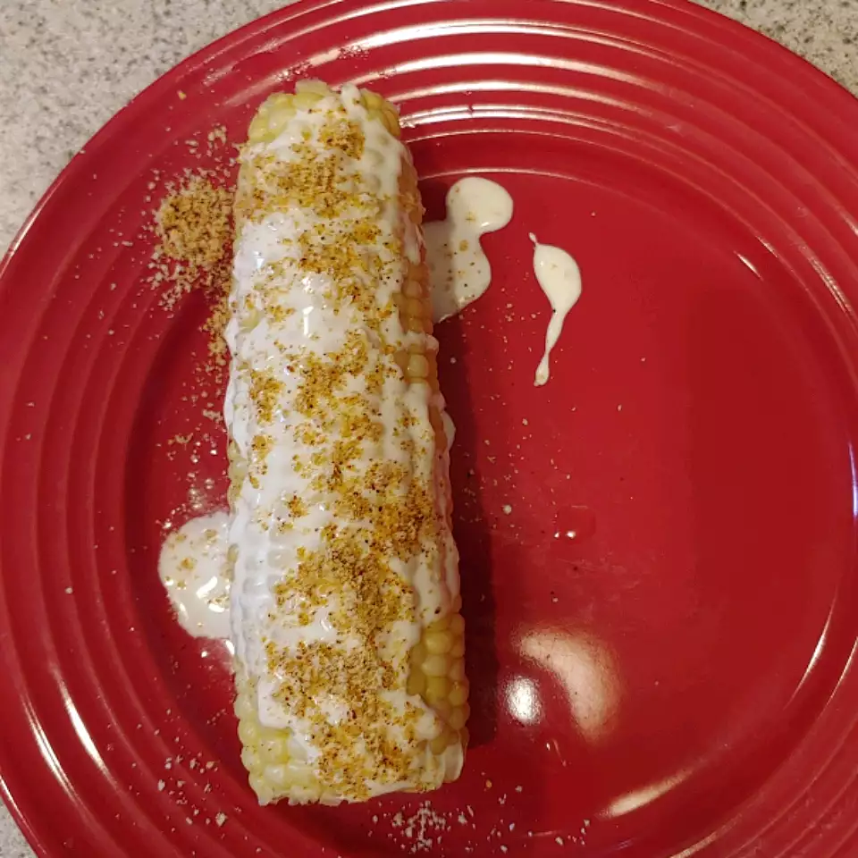

Yummy Grilled Elotes

Description:
Top warm, grilled corn on the cob with a delicious Mexican-style spread. The spicy-creamy topping is also delicious on fresh corn that's been steamed in your kitchen.
- Prep: 20mins
- Cook: 15mins
- Total: 35mins
- Servings: 8
- Yeild: 8 Servings
Ingredients
- ⅓ cup mayonnaise
- ⅓ cup sour cream
- 2 cloves garlic, minced
- 1 lime, juiced
- ¼ cup grated Parmesan cheese
- 1 teaspoon Archer Farms™ ancho chile powder
- 8 ears corn, grilled
Steps:
- Stir mayonnaise, sour cream, garlic and lime juice in small bowl. Combine cheese and chili powder in another small bowl.
- Spread mayo mixture onto warm ears of corn. Sprinkle with cheese mixture. Serve warm.